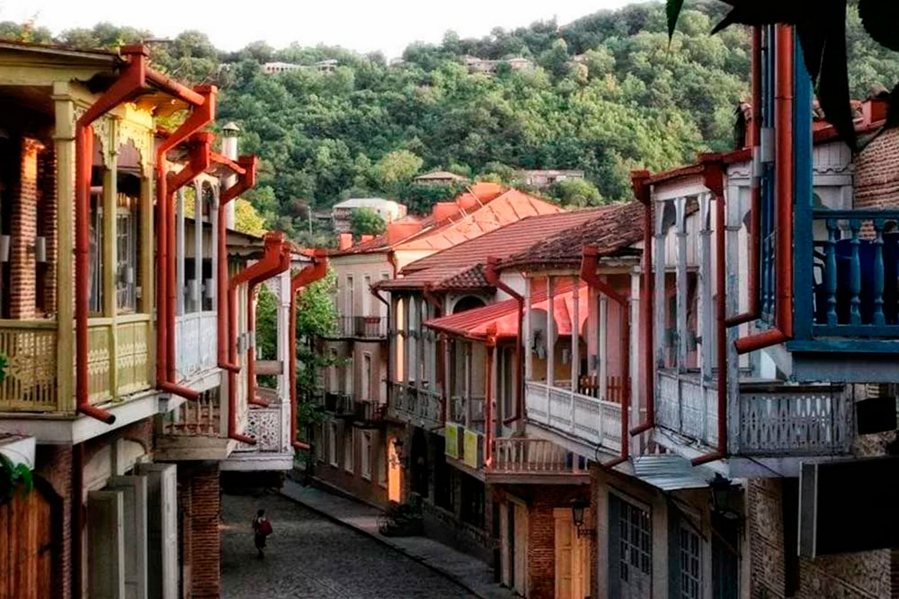
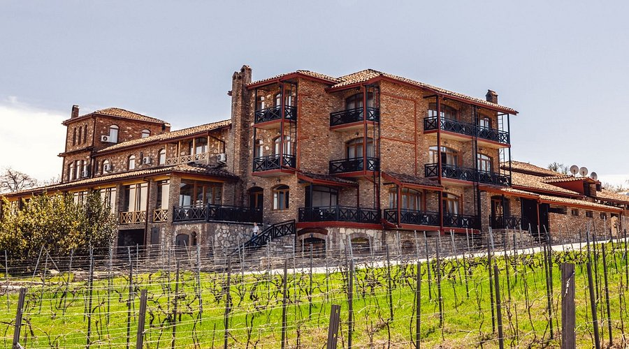
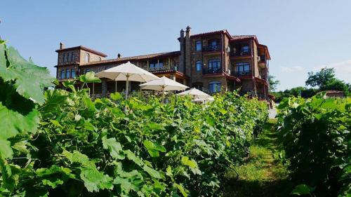
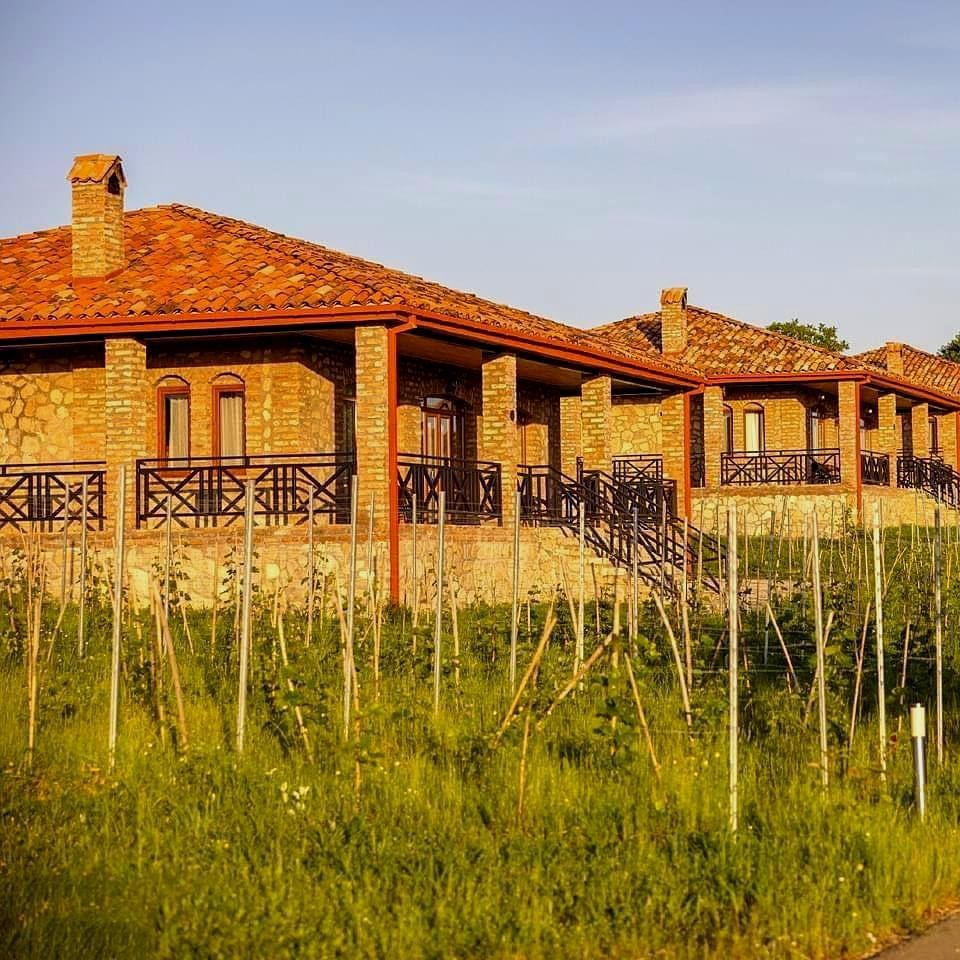
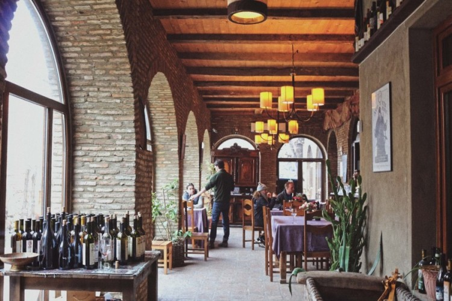
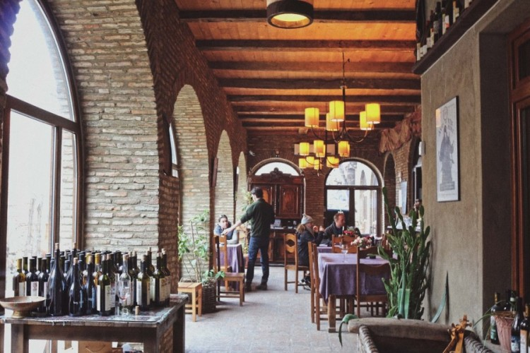

About Kakheti
Kakheti is one of the most important regions of Georgia, known for its wine production, diverse traditions, and stunning natural landscapes. The region includes Sighnaghi, Telavi, Gombori, and the Alaverdi Monastery — cultural centers that contribute to Kakheti's unique identity. Vine-covered fields, high levels of sunshine, and the hospitality of the locals make Kakheti one of the most attractive tourist destinations in the country.
Photo Gallery


Places to Visit
Alaverdi Monastery
A unique 11th-century cathedral and one of the most important cultural monuments of Kakheti.

Sighnaghi
The “City of Love” — the most romantic resort town in Kakheti.
Gombori Road
A mountain pass considered one of the most beautiful roads in Georgia.

Kakheti
Schuchmann Wines Château
Located in Kvareli, Schuchmann Wines Château offers guests a luxury stay with wine tasting, spa facilities, and an elegant restaurant serving local cuisine.
  Pheasant’s Tears – Restaurant
Pheasant’s Tears is a traditional Georgian wine restaurant located in Sighnaghi, offering local dishes and handmade wines in a cozy and authentic environment.
 
